3D printing
ProMice esta constituida en mayor parte por piezas impresas en 3D. Se utilizan dos tecnicas muy comunes de prototipaje; impresion de filamento con PLA e impresion de resina
add image of the whole 3D model of the prostheis including the motors. point to the pieces that have to be printed with resin use different colors
impresion con resina
Las piezas impresas en Resina son las que requieren mayor detalle y calidad, tambien son las piezas mas pequenas. Para imprimir la piezas en resina we used the Form 4 Printer and the general purpose grey resin. This resine has good balance of mechanical properties, especially a soft behavior against friction and a detailed appearence.
El parametraje de la impresora para el tamano de capa es el de base.
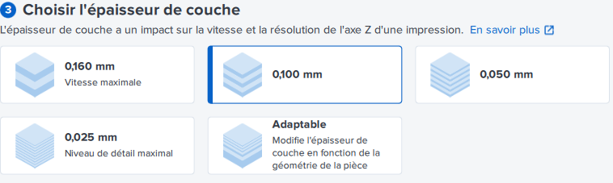
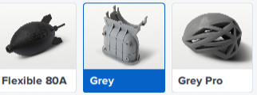
En la imagen de abajo mostramos el modelo 3D de las piezas que se imprimen en resina Se trata de el sistema que alberga las articulaciones, las poleas y los sistemas de tension para los actuating cables .
Ahora describamos cada una de las piezas y su funcion. Cada descripcion muestra tambien la orientacion de impresion para mejores resultados ademas veamos su preparacion depues d el aimpresion para su ensamblaje empezaremos de la pieza que representa el efector final de l aprotesis
Pieces description
The forearm
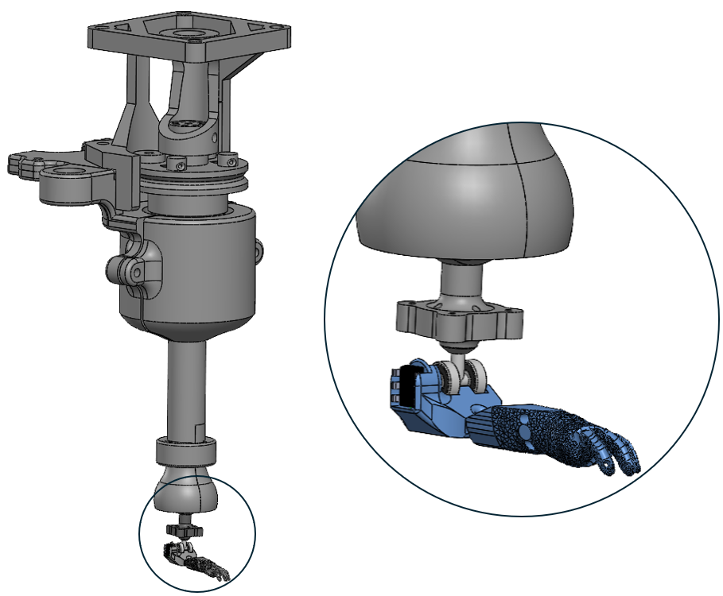
The forearm es la extremidad del sistema porque no hay articulacion de muneca, which means there is a hand but there is not wrist joint. La punta de los dedos es punto del efector final, esta hecha mediante el escaner de una pata real de raton por lo que sus dimensiones respetan las de una pata de raton real, en los dedos se pueden ver pequenas cavidades para los cables de un sensor capacitivo, la idea es poder detectar el tacto de forma puntual. La parte trasera tiene una cavidad para instalar el sensor hall o encoder. La cavidad esta alineada con el eje de rotacion del codo y justo a la altura del eje tenemos las cavidades para insertar the elbow ball bearings. Ortogonales al eje de rotacion de la articulacion se encuentran los dos agujeros por dond epasan los actuating cables que dirigen la articulacion.
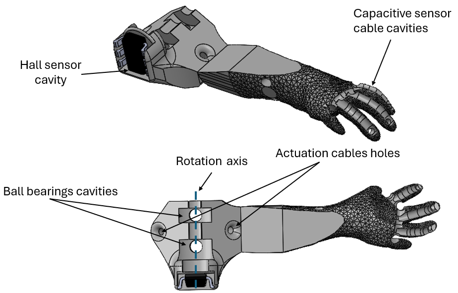
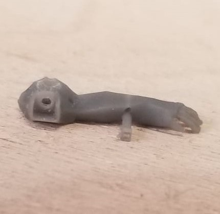
The ball-arm of the ball joint
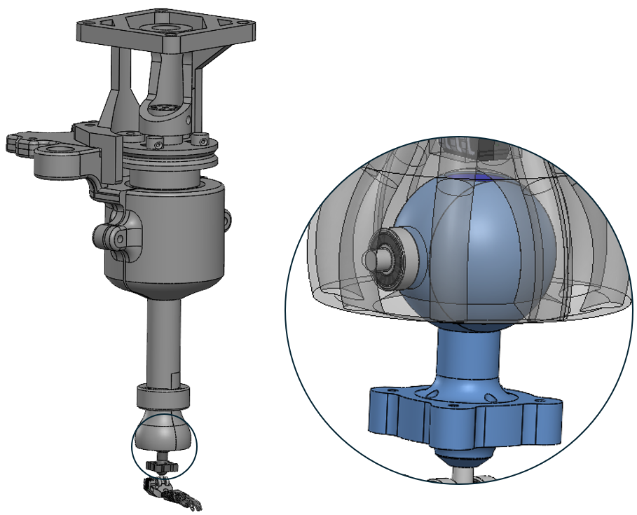
El diseno de esta pieza y sus dimensiones estan detallados en la seccion Mechanical design. se trata de la bola de la ball joint. esta bola esta seccionada de la cual la parte mas frand erepresenta un 70% d ela esfera aproximadamente. La seccion grande tiene cavidades para integrar lo que llamamos Yaw-lock system. El resto es una especie de tapa para completar la esfera. Aunque tiene un diametro de 8mm su diseno la vuelve relativemnnte sencilla de ensamblar.
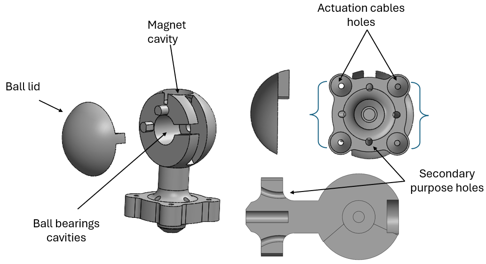
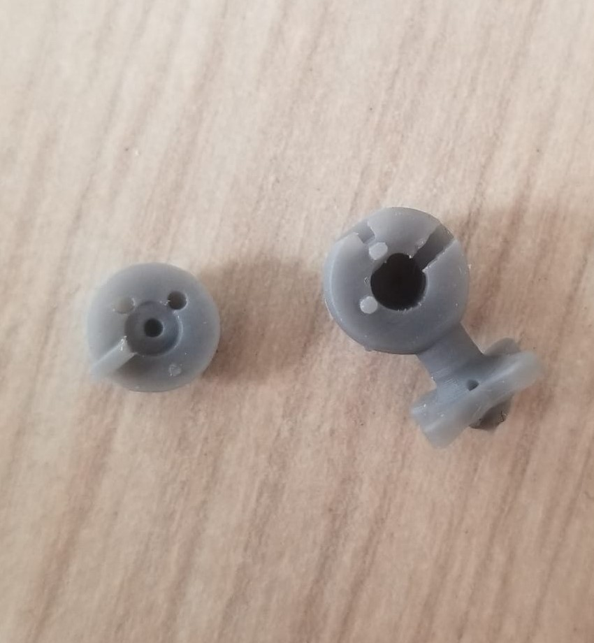
add 3D model, the printing orientation and resin model description of the piece cleanine etc.
the arm of the ball is a stick with a design in the lower part that allws the attachment of the actuating cables. Tambien tiene una cavidad longitudinal al brazo en l aque se inserta la varilla que sostiene la articulacion del codo. cercano al brazo tambien tiene 4 agujeros cuyo proposito se detalla en la seccion de Encoders linearization
The socket
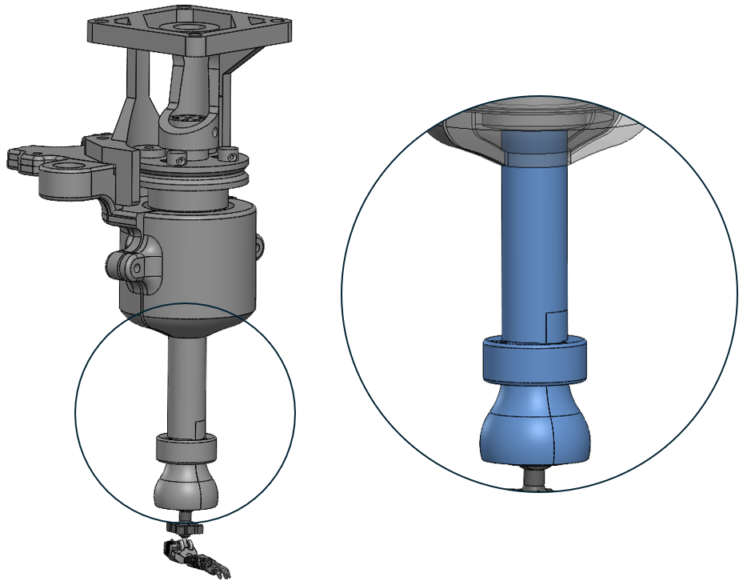
El socket tambien esta dividido en dos piezas para poder ensamblarse con la bola y usamos un anillo para mantener las dos piezas juntas. En ambas piezas podemos notar diferentes ranuras y cavidades. La pieza uno es la mas grande, tiene 9 cavidades cilindricas de las cuales 8 estan distribuidas radial y simetricamente y una esta en el centro. En las 8 cavidades radieales se inserta un PTFE Tube ya que es un bowden -cable-type actuation system. el cable has an internal diameter of 0.3mm and external diameter of 1.5mm En l acabidad esferica que alberga la bola cuenta con un housing donde se inserta un mini rodamiento que forma parte del Yaw-lock system. Justo en el centro se encuentra la cavidad del ball joint hall sensor que medira el movimiento de la articulacion. Esta cavidad esta conectada a la novena cavidad cilindrica para pasar los cables del sensor.
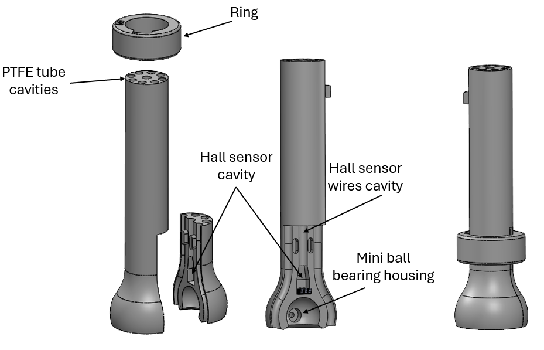
La otra parte de socket es simetrica a la parte baja de la primera, con la excepcion de que esta no alberga rodamiento su funcion es contener la esfera en conjunto con la pieza uno. The socket includes a ring thar fastens the two pieces toguether
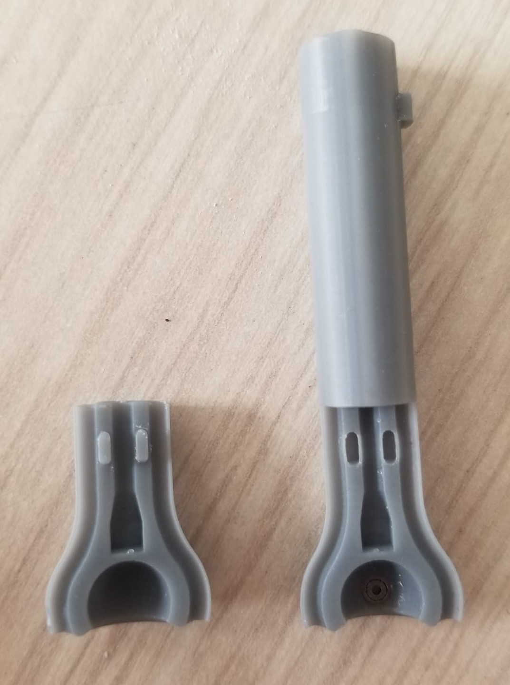
Shoulder ball bearing housing
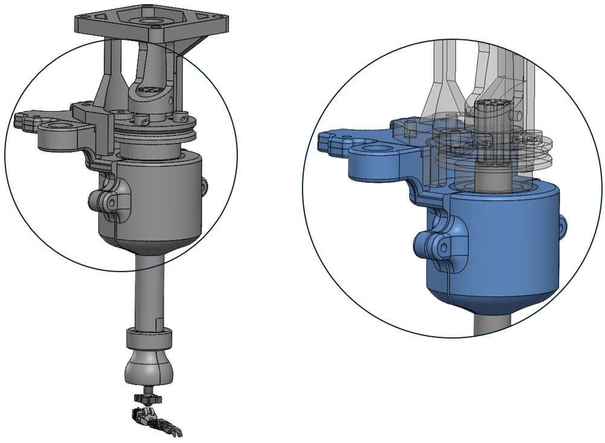
This section is composed by 3 piece. it holds the shoulder Z-axis rotation system. It has housings for two ball bearings and two cavities for the PTFE tube. La pieza mas gra,de es la parte que sostiene la parte frontal de la protesis, en la imagen de abajo se muestra senalado el front support hole para apoyar la protesis en un Flex arm.
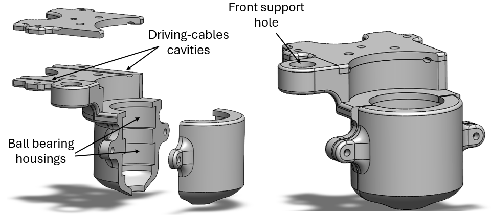
Las dos piezas restantes son complementos para sostener los rodamientos y para sostener el PTFE Tube
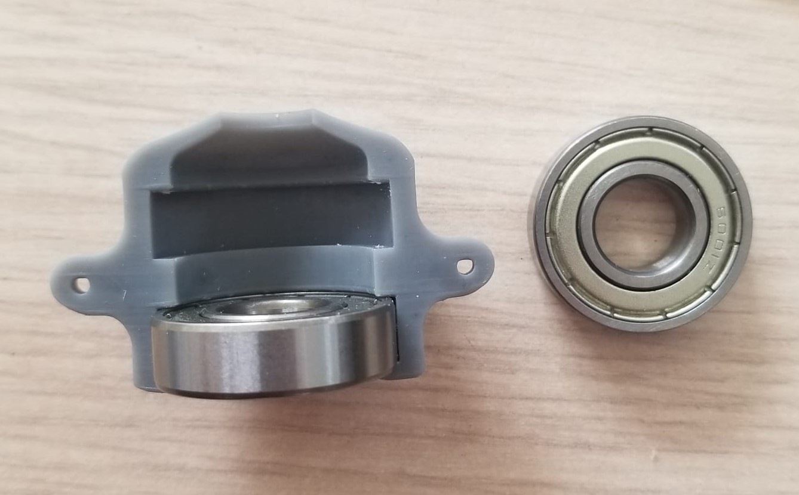
faltan imagenes en resina de las otras dos piezas
Shoulder rotatory pieces
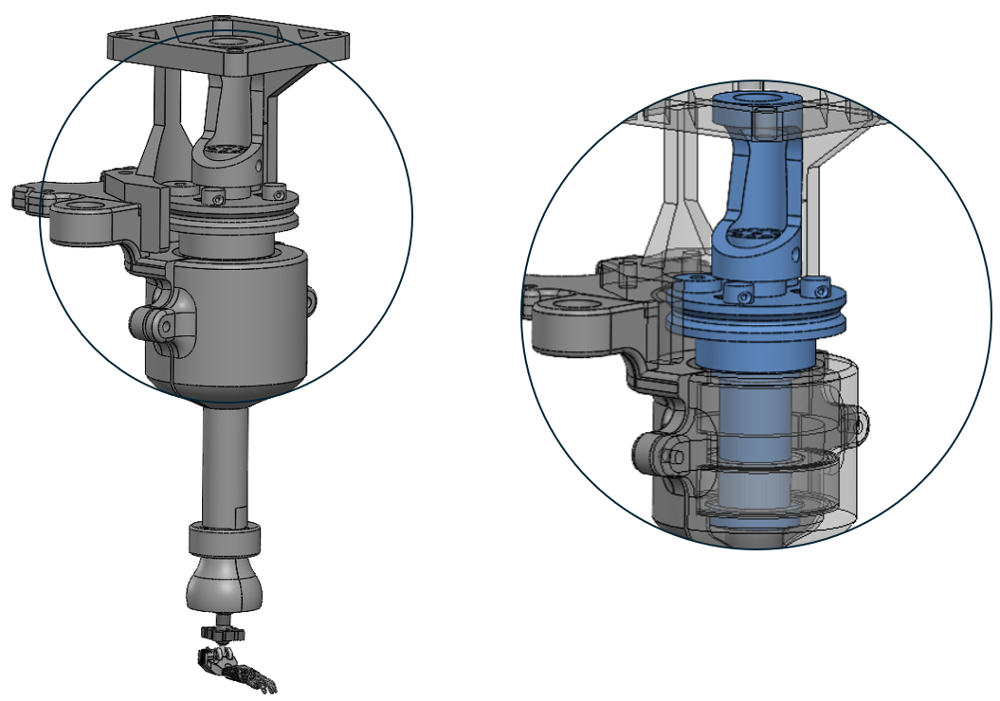
Este es un set de tres piezas que transmiten la rotacion en Z del hombro al resto d ela protesis. La pizea en el top va insertada en la polea, tiene una cavidad para un iman que queda justo debajo de un encoder para medir la rotacion. La polea lleva atados los actuating cables como lo muestra the red dashed line en la figura de abajo. La pieza de mas abajo es la conexion entre la polea y el socket.
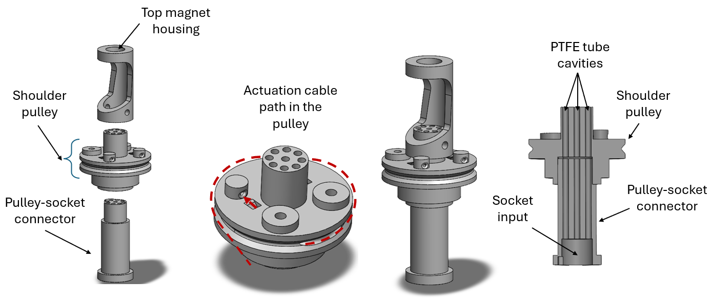
Top encoder base.
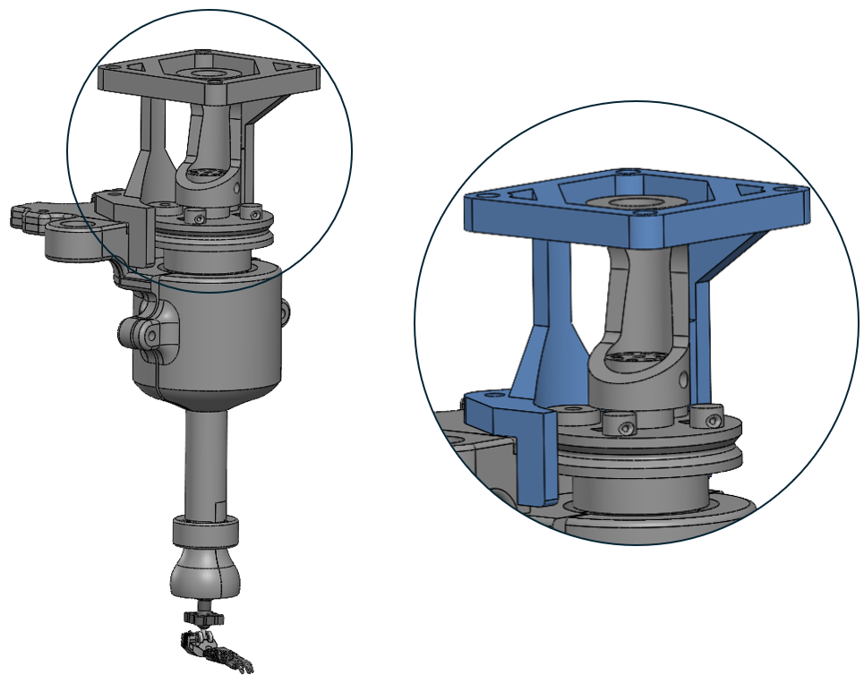
Esta ultima pieza sostiene un uStepper driver para medir la rotacion del hombre en el eje Z
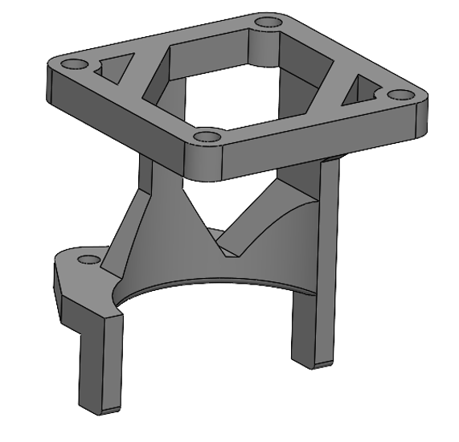
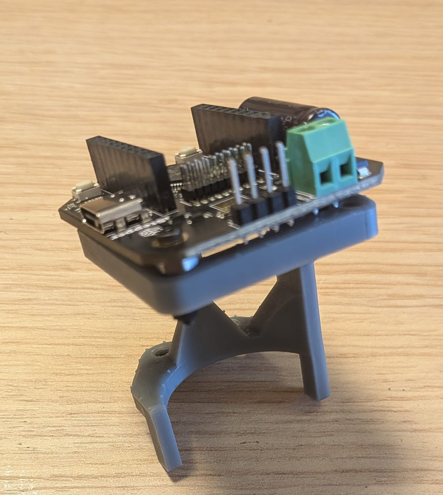